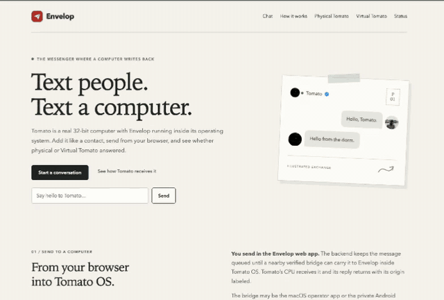

Generative response space
many possible outputs
A generative stack maps the input through learned weights or a remote inference service and selects from a broad response space.

Envelop in the browser · tap for the full recordingPEOPLE AND ONE DORM COMPUTER
Enter a name and you're visible while you're here. Text whoever is online, and send Tomato a hello whenever its verified bridge is up. If physical Tomato is offline, notes queue for its return while supported compute runs immediately in Virtual Tomato. You can also preview any draft explicitly in Virtual Tomato from the chat box; it stays labeled virtual and is never sent to hardware. “Leave Envelop” requests deletion of your profile and related chats.
Try three ALU inputs in one Dual-LUT form: xorand(0xF0, 0xAA, 0x0F) → 85 / 0x00000055. How compute works. An online authenticated lease uses a durable physical-hardware job; otherwise the result is clearly labeled Virtual Tomato. Ambiguous hardware jobs are never replayed virtually.
Runs here in your browser. Available even when physical Tomato is off.
Envelop runs without AI. It was designed as deterministic software around Tomato’s open-compute philosophy: reviewed rules select source-linked answers, while the compiler exposes the program, bytecode, target, and result provenance.
A generative stack maps the input through learned weights or a remote inference service and selects from a broad response space.
One inspectable pathThe behavior catalog, router, and help stay within a tested 96 KiB source budget, with 0 bytes of model weights.
The same input, state, and version take the same route. Open compute makes the route and evidence inspectable, from a matched answer rule to the bytes Tomato executes.